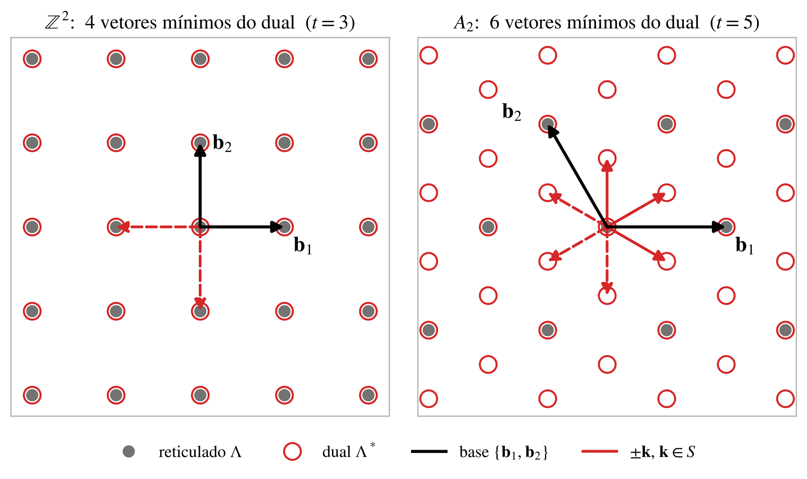

Reticulados, duais e o potencial
Neste módulo construímos o objeto central: o conjunto \(S\) de vetores mínimos do dual, que define o potencial. Tudo o que acontece depois — anisotropia, caos, difusão — é uma propriedade de \(S\).
Reticulados e matriz de Gram
Em coordenadas da base, \(\mathbf r=B\boldsymbol\varphi\), a norma é \(|\mathbf r|^2=\boldsymbol\varphi^{\mathsf T}G\boldsymbol\varphi\). Na prática obtemos uma base cartesiana pela decomposição de Cholesky \(G=LL^{\mathsf T}\), \(B=L^{\mathsf T}\). Dois exemplos em 2D:
\[ G_{\Z^2}=\begin{pmatrix}1&0\\0&1\end{pmatrix},\qquad G_{A_2}=\begin{pmatrix}2&-1\\-1&2\end{pmatrix}. \]O reticulado dual
O dual é o espaço de “vetores de onda” compatíveis com a periodicidade de \(\Lambda\): uma função \(e^{2\pi i\,\mathbf k\cdot\mathbf r}\) é \(\Lambda\)-periódica exatamente quando \(\mathbf k\in\Lambda^*\). No código escrevemos \(\cos(\mathbf k\cdot\mathbf r)\), absorvendo o \(2\pi\) na escala de \(\mathbf r\); o potencial é então periódico no reticulado \(2\pi\,(\mathrm{span}_\Z S)^*\).
Os vetores de norma mínima do dual formam um conjunto finito e simétrico. Seu número é o número de beijo \(\tau(\Lambda^*)\). Ficamos com \(|S|=\tau/2\) representantes, um por par \(\pm\mathbf k\).
Origem do potencial: compactificação de Kaluza–Klein
Considere um campo escalar livre \(\Phi(x^\mu,\mathbf y)\) em \(M_4\times T^N_\Lambda\), com \(T^N_\Lambda=\R^N/\Lambda\). A periodicidade \(\Phi(x,\mathbf y+\mathbf v)=\Phi(x,\mathbf y)\) para \(\mathbf v\in\Lambda\) impõe a expansão
\[ \Phi(x,\mathbf y)=\sum_{\mathbf k\in\Lambda^*}\phi_{\mathbf k}(x)\,e^{2\pi i\,\mathbf k\cdot\mathbf y}, \qquad m_{\mathbf k}\propto|\mathbf k|. \]Os modos não nulos mais leves são os vetores de norma mínima de \(\Lambda^*\). Mantendo apenas esses modos, com amplitudes constantes, tomando a parte real e fixando a constante para que o potencial se anule na origem, obtemos \(V=V_0\sum_{\mathbf k\in S}[1-\cos(\mathbf k\cdot\mathbf y)]\). Por exemplo,
\[ V_{\Z^2}=V_0\bigl[2-\cos\varphi_1-\cos\varphi_2\bigr],\qquad V_{A_2}=V_0\bigl[3-\cos\varphi_1-\cos\varphi_2-\cos(\varphi_1-\varphi_2)\bigr]. \]
As famílias de reticulados
- \(\Z^N\): \(\Lambda^*=\Z^N\), \(S=\{\mathbf e_i\}\). O potencial é separável (soma de pêndulos independentes) e serve de controle integrável.
- \(A_n=\{\mathbf x\in\Z^{n+1}:\sum x_i=0\}\): o dual \(A_n^*\) tem \(n+1\) pares de vetores mínimos (as projeções de \(\mathbf e_i\) no hiperplano \(\sum x_i=0\)). \(A_3\) é o FCC.
- \(A_n^*\): seu dual é \(A_n\), cujos vetores mínimos são as raízes \(\mathbf e_i-\mathbf e_j\): \(n(n+1)/2\) pares. \(A_3^*\) é o BCC.
- \(D_n=\{\mathbf x\in\Z^n:\sum x_i\ \text{par}\}\): para \(n\ge5\) os vetores mínimos de \(D_n^*\) são apenas \(\pm\mathbf e_i\), e o potencial coincide com o do \(\Z^n\). Em \(n=4\) somam-se os 16 vetores \((\pm\tfrac12)^4\), formando o politopo de 24 células.
- \(D_n^*\): potencial com as raízes \(\pm\mathbf e_i\pm\mathbf e_j\) de \(D_n\): \(n(n-1)\) pares.
- \(E_8\): \(D_8\cup(D_8+\tfrac12\mathbf 1)\), autodual, 240 raízes (120 pares). \(E_7\) e \(E_6\) são obtidos dentro de \(E_8\): as raízes de \(E_7\) são as de \(E_8\) ortogonais a uma raiz (126), e os vetores mínimos de \(E_7^*\) são projeções de 56 raízes; analogamente \(E_6\) (72 raízes) e \(E_6^*\) (54 vetores).
Normalização: todos os modos com \(\omega=1\)
Perto da origem, \(V\approx\tfrac12\,\mathbf r^{\mathsf T}\bigl(\sum_{\mathbf k}\mathbf k\mathbf k^{\mathsf T}\bigr)\mathbf r\). Para todos os reticulados estudados, \(S\cup(-S)\) é (pelo menos) um 2-design, o que implica \(\sum_{\mathbf k}\mathbf k\mathbf k^{\mathsf T}=c\,\mathbb 1\). Reescalando \(\mathbf k\to\mathbf k/\sqrt c\) obtemos frequências harmônicas todas iguais a 1. Isso só muda as unidades de \(\mathbf r\) e de \(t\): energias de sela e anisotropias ficam inalteradas, e reticulados de dimensões diferentes passam a ser diretamente comparáveis.
As 30 geometrias
\(M=|S|\) é o número de termos do potencial; \(t\), a força do design; \(\rho_4=\max_{\hat u}/\min_{\hat u}\sum_{\mathbf k}(\mathbf k\cdot\hat u)^4\) mede a anisotropia do termo quártico (\(\rho_4=1\): isotrópico); \(E_{\rm sep}\) e \(E_{\rm sep}^{(4)}\) são as energias de sela do potencial completo e do truncamento quártico.
| reticulado | N | M | classe | \(\rho_4\) | \(E_{\rm sep}\) | \(E^{(4)}_{\rm sep}\) | equivalentes |
|---|---|---|---|---|---|---|---|
| Z2 | 2 | 2 | separável | 2,000 | 2 | 1,5 | |
| A2 | 2 | 3 | t = 5 | 1,000 | 4 | 3 | A2* |
| Z3 | 3 | 3 | separável | 3,000 | 2 | 1,5 | |
| A3 (FCC) | 3 | 4 | t = 3 | 2,333 | 4 | 2,571 | D3 |
| A3* (BCC) | 3 | 6 | t = 3 | 1,333 | 6 | 4,5 | D3* |
| Z4 | 4 | 4 | separável | 4,0 | 2 | 1,5 | |
| A4 | 4 | 5 | t = 3 | 2,778 | 3,5 | 2,308 | |
| A4* | 4 | 10 | t = 3 | 1,498 | 8 | 6 | |
| D4 | 4 | 12 | t = 5 | 1,000 | 12 | 9 | D4* |
| Z5 | 5 | 5 | separável | ≈5 | 2 | 1,5 | D5 |
| A5 | 5 | 6 | t = 3 | 4,045 | 3,172 | 2,143 | |
| A5* | 5 | 15 | t = 3 | 1,780 | 10 | 7,5 | |
| D5* | 5 | 20 | t = 3 | 1,245 | 16 | 12 | |
| Z6 | 6 | 6 | separável | ≈6 | 2 | 1,5 | D6 |
| A6 | 6 | 7 | t = 3 | 4,628 | 2,955 | 2,032 | |
| A6* | 6 | 21 | t = 3 | 1,963 | 12 | 9 | |
| D6* | 6 | 30 | t = 3 | 1,477 | 20 | 15 | |
| E6 | 6 | 27 | t = 5 | 1,000 | 24 | 18 | |
| E6* | 6 | 36 | t = 5 | 1,000 | 32 | 24 | |
| Z7 | 7 | 7 | separável | ≈7 | 2 | 1,5 | D7 |
| A7 | 7 | 8 | t = 3 | 5,659 | 2,804 | 1,954 | |
| A7* | 7 | 28 | t = 3 | 2,171 | 14 | 10,5 | |
| D7* | 7 | 42 | t = 3 | 1,696 | 24 | 18 | |
| E7 | 7 | 28 | t = 5 | 1,000 | 24 | 18 | |
| E7* | 7 | 63 | t = 5 | 1,000 | 54 | 40,5 | |
| Z8 | 8 | 8 | separável | ≈8 | 2 | 1,5 | D8 |
| A8 | 8 | 9 | t = 3 | 6,286 | 2,693 | 1,895 | |
| A8* | 8 | 36 | t = 3 | 2,281 | 16 | 12 | |
| D8* | 8 | 56 | t = 3 | 1,886 | 28 | 21 | |
| E8 | 8 | 120 | t = 7 | 1,000 | 112 | 75 | E8* |
Para \(\Z^N\), \(\rho_4=N\) exatamente (máximo ao longo de \(\mathbf e_i\), mínimo na diagonal); os valores “≈” vêm da amostragem numérica. Na família \(A_n\) a sela mais baixa fica abaixo do ponto médio dos períodos (por exemplo, \(E_{\rm sep}=3{,}5<4\) em \(A_4\)), porque o caminho de escape passa perto de mínimos secundários localizados nos “buracos profundos” do reticulado.